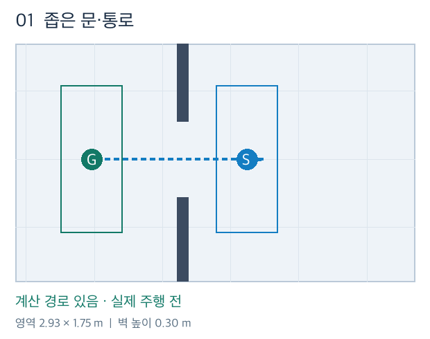
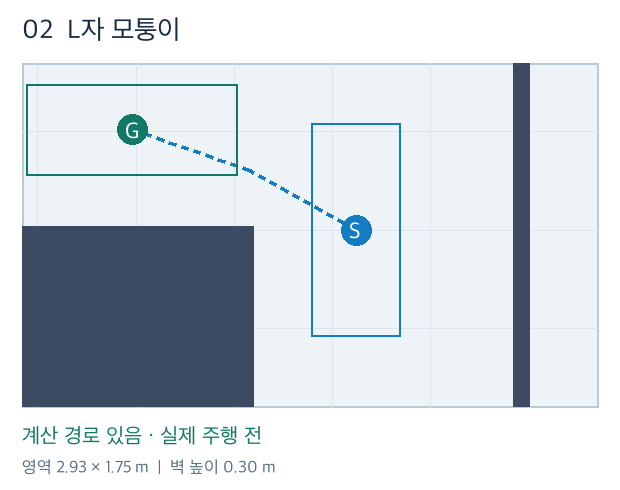
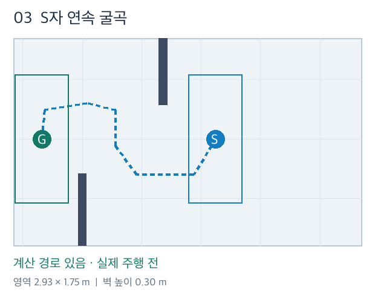
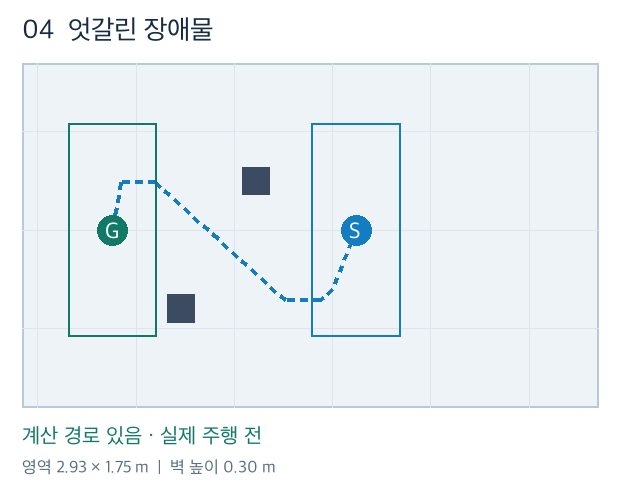
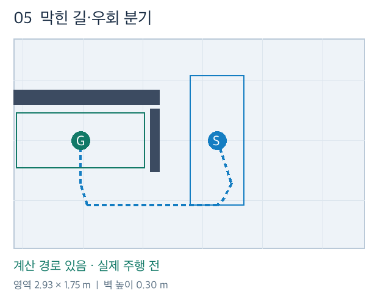
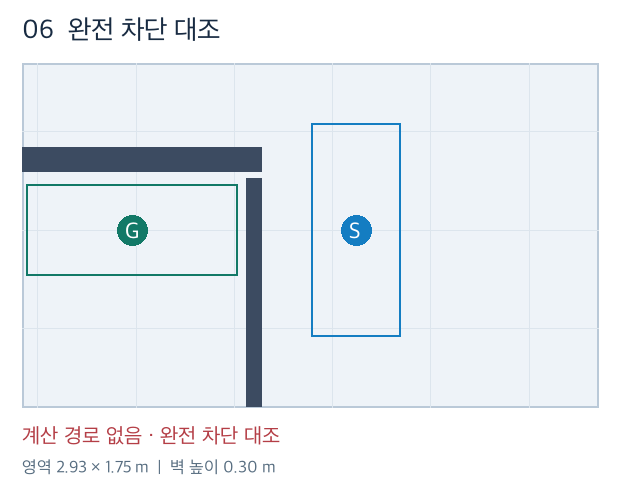

평지 대표 배치 5종과 완전 차단 대조 1개입니다. 도면의 점선은 계산 경로이며, 파지·주행·통과 시험은 아직 수행하지 않았습니다. 실제 카메라 영상은 지도와 같은 MuJoCo 장면을 렌더한 것입니다.

폭 56 cm 문을 지나려면 공동 하중의 방향을 바꿔야 합니다.
실제 top 카메라 · 관찰 시점

안쪽 모서리를 돌아 위쪽 통로로 들어갑니다.

위·아래로 엇갈린 벽 사이에서 이동 방향을 연속으로 바꿉니다. 차체 회전은 강제하지 않습니다.

서로 어긋난 두 기둥 사이를 공동 하중 전체가 지나도록 배치했습니다.

위쪽 출구는 막혀 있으며 아래쪽으로 우회하는 경로를 남겼습니다.

5번 지형의 아래쪽 우회로까지 막은 대조 배치입니다.